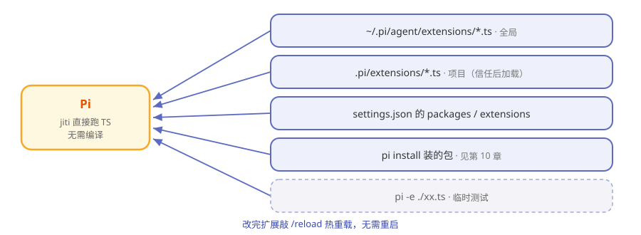

第8章 Extensions：教 Pi 学新本事¶
阅读提示 本章是 Pi 的灵魂：扩展（extension）到底是什么、能干什么、怎么加载。读懂这章，你就懂了 Pi 为什么敢说"让你完全接管"。约 10 分钟。
教新员工一招¶
回到那个只带四件工具上岗的员工。现在你想让他会"部署上线"。在别的公司，你得改员工手册、走流程、等版本发布。在 Pi 这里，你只要写一张"技能卡"递给他，他当场就会了——不用改他的"大脑"，不用重新入职。
这张技能卡，就是 extension（扩展）。
扩展到底是什么¶
一个扩展就是一个 TypeScript 模块。它导出一个函数，Pi 启动时把一套"接口"（ExtensionAPI）递进去，你用这套接口就能给 Pi 添本事：
export default function (pi) {
pi.on("tool_call", ...) // 订阅事件，可拦截
pi.registerTool({...}) // 注册新工具
pi.registerCommand("hello", ...) // 注册 /hello 命令
}
就这么多。没有编译步骤——Pi 用 jiti 直接跑 TypeScript，写完即生效。
扩展能干什么¶
这是 Pi 能力面的总览，你会发现第 1 章"六条故意不做"的活路全在这里：
表8-1 扩展能扩展的东西
| 接口 | 能干什么 | 对应"故意不做"的替代 |
|---|---|---|
| registerTool | 加新工具，甚至替换内置工具 | 自定义工具 |
| registerCommand | 加 /命令 |
— |
| registerShortcut / registerFlag | 加快捷键 / 启动参数 | — |
| pi.on(事件) | 拦截/监听各种事件 | 权限弹窗（拦危险命令） |
| registerProvider | 加自定义/OpenAI 兼容模型源 | — |
| 各种 renderer | 自定义界面渲染 | — |
| ctx.ui | 弹窗、确认框、状态栏，甚至接管整块界面 | — |
| pi.appendEntry | 往会话账本写持久记录 | — |
阅读提示 官方仓库带了 79 个扩展示例，从"你好世界"到"用扩展实现计划模式、子代理、沙箱"，甚至能在终端里玩贪吃蛇。第 1 章说的"计划模式/子代理官方不内置"，这里都有现成的扩展实现。
扩展从哪里被找到¶
Pi 启动时会去几个固定位置"收技能卡"：

图8-1 Pi 从哪里加载扩展
表8-2 五个发现位置
| 位置 | 作用域 |
|---|---|
~/.pi/agent/extensions/*.ts |
全局，所有项目生效 |
.pi/extensions/*.ts |
当前项目，项目被信任后才加载 |
| settings.json 的 packages/extensions | 配置指定 |
pi install 装的包 |
见第 10 章 |
pi -e ./xx.ts |
临时加载，测试用 |
改完扩展敲 /reload 就能热重载，不用重启 Pi。
权力越大，越要盯紧¶
扩展是拿你的全部权限在跑的——它能读你能读的、跑你能跑的。所以：
表8-3 扩展的安全边界
| 机制 | 说明 |
|---|---|
| 第三方包先看源码 | 装别人的扩展前，读一遍它干什么 |
| 项目级扩展有信任门 | 项目要先被你 trust，里面的扩展才加载 |
| 事件拦截可做权限门 | 用 beforeToolCall/on 事件拦危险操作 |
这正是第 1 章那句话的另一面：Pi 把选择权给你，也把责任给了你。
🧪 本章实验¶
实验 8-1 ★｜看一个最小扩展 目标：建立扩展的直观印象。 步骤：打开仓库里的 hello.ts 示例。 验收：你能指出哪一行在"注册命令"。
实验 8-2 ★★｜让 Pi 给自己造个扩展 目标：体验"自我扩展"。 步骤：对 Pi 说"给我写一个扩展，加一个 /now 命令显示当前时间"，然后 /reload。 验收：敲 /now 能出时间——你刚刚让 Pi 教会了自己一招。
🤔 思考题¶
- ★ 扩展"不用编译、写完即生效"靠的是什么？
- ★★ 为什么"项目级扩展要先 trust 项目"是个重要的安全设计？
- ★★★ 如果扩展能替换内置工具，会带来什么可能，又有什么风险？
📝 小结¶
- 扩展 = 一个 TS 模块——导出函数，Pi 递进 ExtensionAPI
- jiti 直接跑 TS——无编译，/reload 热重载
- 能加工具/命令/事件拦截/UI/模型源——六条"故意不做"的活路全在这
- 五个发现位置——全局/项目（需信任）/配置/安装包/临时
- 拿你全部权限运行——第三方的先审源码
下一章看三种更轻的"零件"：Skills、提示词模板和主题。➡️ 第9章 Skills、提示词模板与主题